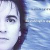

Celtic Lyrics Corner > Artists & Groups > Karan Casey > The Winds Begin To Sing > The King's Shilling
|  | The King's Shilling |
| Credits : | Traditional; arranged by Karan Casey, Ted Barnes & Donald Shaw |
| Appears On : | The Winds Begin To Sing |
| Language : | English |
Lyrics :
Oh my love has left me with bairnes twa
And that's the last of him I ever saw
He joined the army and marched to war
He took the shilling, he took the shilling and he's off to war
Chorus
:
Come, laddies, come, hear the cannon roar
Take the king's shilling and you're off to war
Well, did he look as he marched along
With his kilt and sporran and his musket gun?
The ladies tipped him as he marched along
He sailed out by, he sailed out by the Broomielaw
Pipes did play as he marched along
And the soldiers sang out a battle song
"March on, march on," cried the captain gay
For king and country, for king and country we will fight today
(Chorus)
Well, the battle rattled to the sound of guns
And the bayonets flashed in the morning sun
The drums did beat and the cannon roared
And the shilling didn't seem, oh the shilling didn't seem much worth the war
(Chorus)
Well, the men they fought and the men did fall
Cut down by bayonet and musket ball
Many of these brave young men
Would never fight for, would never fight for the king again
(Chorus)
Come, laddies, come, hear the cannon roar
Take the king's shilling and you'll die in war...